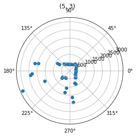

The purpose of this lab is to map out a small room by using spinning the robot around, and using the TOF sensor to measure the distance to the robots distance to each wall as it spins.
Setup
TThere were two ways to go about this lab. Either spin the robot continuously as it took TOF readings, or have the robot stop mid spin when it takes it's measurments. I decided to have my robot
spin continuously. I chose to do this because I noticed my right wheels dont spin as well as my left. This causes the robot to not spin smoothly when it initially starts spinning.
On top of this, I also spin my robot much faster than the recommended speed of 25 degrees per second. This is also to overcome the extra resistance in my right wheels. I ended up getting my robot to spin at
160 degrees per second. This caused extra drift with the IMU, but that error was much less than the error caused by my robot not spinning well at low speeds.
Lab Sections
Part 1: Spinning:
I was able to get my robot to spin in place pretty reliably at a higher speed, as can be seen in the video below.
The robot certainly changes it's orientation during the spin, but the error ended up being a lot less than what I expected given the speed at which it spins.
the 5 graphs below show the polar coordinates of the ToF measurements. These coordinates includes the points from the second rotation, which I expected would cause a lot of error.
However, you'll notice that points on close edges of the walls are consistent, showing that there isn't much error between the first and second rotation.

I ended up using the integrated gyroscope values to make these plots. I also noticed my gyroscope values were a little off center. I believe this is because I started rotating before taking
my first measurement, or just error from the gyroscope. I ended up rotating the polar coordinates to get them placed correctly by adding a small offset to the radian measurement for each graph,
I also convert each measurement to radians from degrees as this is needed to plot in polar coordinates in matplotlib.
An example of this can be seen in this code :
def MakeMap(map, offset=0):
prevDist = 0
newData = [[],[]]
for i, j in map:
if j != prevDist:
newData[0].append(i/180.0*np.pi-offset)
newData[1].append(j)
prevDist = j
return newData
map1Data = MakeMap(map1, .2)
Part 2: Map
To make the map I translated each set of measurements to where they were taken, using location 0,0 as the origin. I did not have to add any rotation when doing that as I had
just done this while the coordinates were in polar form. When putting all the graphs together, I successfully got an outline of the room.
I then traced out the lines to get a rough estimate of how the room is shaped.
This closely resembles the actual area the measurements were taken in. Lastly, the data to trace out the room was saved into four arrays that will be used for the simulator in lab 10.